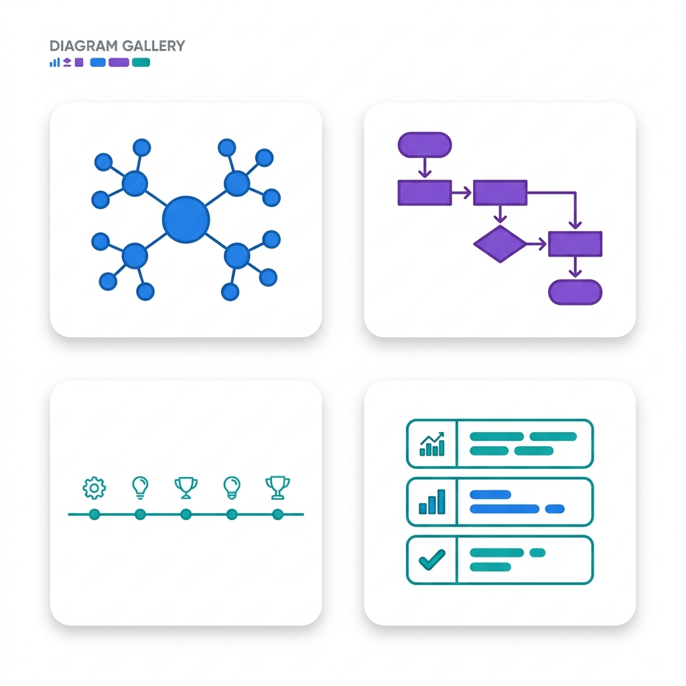
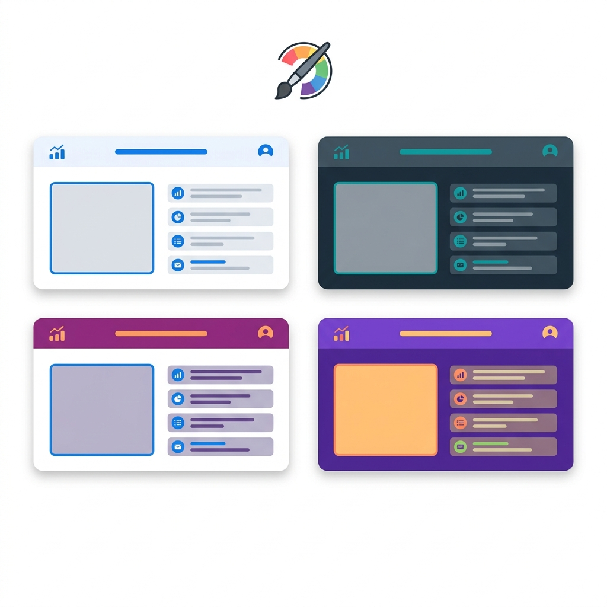

AI for Ed · สัปดาห์ที่ 4
เครื่องมือ Generative AI: แชต + สร้างสื่อความรู้ด้วย Napkin & Gamma
เริ่มต้นคลาส
ระบุข้อมูลผู้เรียน
แนวคิด A3: ไม่ใช่ทุกโมเดลเก่งเท่ากัน
เทียบโมเดล “เร็ว” vs “เก่ง” ด้วย LMArena
โมเดลรุ่นเล็ก/เร็ว ตอบไว ประหยัด แต่ตรรกะอาจพลาด ส่วนรุ่นใหญ่/เก่ง คิดลึกกว่าแต่ช้ากว่า
เปิด LMArena (lmarena.ai) เลือกโหมด Direct Chat ที่เปิดสองโมเดลคู่กัน เลือกรุ่นเล็กไว้ข้างหนึ่ง รุ่นใหญ่อีกข้าง แล้วถามโจทย์ตรรกะเดียวกัน
👀 สังเกต 3 อย่าง:
- คำตอบ ถูก ไหม?
- เร็ว ต่างกันแค่ไหน?
- วิธี อธิบายเหตุผล ละเอียดต่างกันอย่างไร?
กิจกรรม A3 (⏱ 12 นาที)
ข้อ A3 — เทียบโมเดลด้วยโจทย์ตรรกะ
โจทย์ตรรกะของคุณ: ...
⚡ 1. คำตอบจากโมเดล “เร็ว/เล็ก” (+ ความเร็วโดยประมาณ):
🧠 2. คำตอบจากโมเดล “เก่ง/ใหญ่”:
✏️ 3. สรุป: รุ่นไหนตอบดีกว่า/ถูกกว่า เพราะอะไร และแลกกับความเร็วอย่างไร:
ช่วง B · เครื่องมือที่ใช้
สร้างสื่อความรู้ด้วย AI: Napkin & Gamma
| ขั้นตอน | เครื่องมือ | ได้อะไรออกมา |
|---|
| 1. ร่าง “เนื้อหา” ด้วยสูตร RFC | Gemini — gemini.google.com (หรือแชตจากช่วง A) | โครงเนื้อหาเป็นหัวข้อย่อยที่จัดระเบียบดี |
| 2. แปลงเนื้อหาเป็น “แผนภาพ” | Napkin.ai — napkin.ai | Mind Map · Flowchart · Timeline · Infographic |
| 3. แปลงเนื้อหาเป็น “สไลด์/เว็บ” | Gamma.app — gamma.app | สไลด์นำเสนอจัดหน้าสวยอัตโนมัติ |
💡 หัวใจของช่วงนี้: เครื่องมือทั้งสองจะ “ฉลาด” ก็ต่อเมื่อเรา ป้อนเนื้อหาที่จัดระเบียบมาดี — ทักษะเชื่อมต่อคือการเขียนพรอมต์ด้วยสูตร RFC (ต่อยอดจากช่วง A)
แนวคิดหลัก: สะพานเชื่อมก่อนใช้เครื่องมือ
สูตร RFC — เตรียมเนื้อหาให้ดีก่อนเจนสื่อ
ก่อนจะให้ Napkin/Gamma เจนสื่อ เราต้องมี “เนื้อหาที่ดี” เสียก่อน — ใช้ Gemini ร่างให้ โดยสั่งด้วยสูตร RFC:
- R = Role (บทบาท): ให้ AI สวมบทเป็นใคร → คุมน้ำเสียง/ความลึก (เช่น “คุณคือครูวิทยาศาสตร์”)
- F = Format (รูปแบบ): อยากได้ผลลัพธ์หน้าตาแบบไหน (เช่น “หัวข้อย่อย 5 ข้อ ข้อละ 1 ประโยค”)
- C = Context (บริบท): ทำไป/เพื่อใคร (เช่น “เพื่อให้เด็ก ม.6 เข้าใจใน 1 นาที”)
✗ พรอมต์กว้างเกินไป
“ขอข้อมูลเรื่องวัฏจักรน้ำ” → ได้บทความยาวเป็นพรืด เอาไปทำแผนภาพ/สไลด์ต่อยาก
✓ พรอมต์สูตร RFC
“[R] คุณคือครูวิทยาศาสตร์ [C] อธิบายวัฏจักรน้ำให้เด็ก ป.5 เข้าใจง่าย [F] สรุปเป็น 4 ขั้นตอนสั้นๆ ข้อละ 1 ประโยค” → ได้โครงพร้อมเทใส่ Napkin/Gamma
แนวคิด B1: แปลงข้อความเป็นแผนภาพ
Napkin.ai — เปลี่ยน “ข้อความ” เป็น “ภาพ”
Napkin.ai รับ “ข้อความที่จัดระเบียบดี” แล้วเจนเป็นแผนภาพให้อัตโนมัติ — เหมาะกับการสรุปความรู้ให้ดู “จบในภาพเดียว”
- วางข้อความ (ที่ร่างจาก Gemini ด้วยสูตร RFC) ลงไป
- Napkin เสนอ แผนภาพหลายแบบ ให้เลือก คลิกเลือกอันที่สื่อความได้ดีที่สุด
- ปรับแต่งสี/ไอคอน/สไตล์ แล้ว Export เป็น PNG ไปใช้ต่อ
✅ ขั้นตอน: Gemini (RFC) → คัดลอกเนื้อหา → วางใน Napkin → เลือกแผนภาพ → ปรับแต่ง → Export
แนวคิด B1: เลือกชนิดแผนภาพให้ตรงเนื้อหา
เลือก “ชนิดแผนภาพ” ให้ตรงกับเนื้อหา
| ชนิดแผนภาพ | เหมาะกับเนื้อหาแบบ |
|---|
| Mind Map | หัวข้อใหญ่แตกเป็นหัวข้อย่อยหลายกิ่ง |
| Flowchart | กระบวนการ/ขั้นตอนที่ไล่เรียงต่อกัน |
| Timeline | เหตุการณ์/พัฒนาการตามลำดับเวลา |
| Infographic / List | ข้อสรุปหรือรายการประเด็นสำคัญ |
| Pyramid / Funnel | ลำดับชั้น/ความสำคัญจากมากไปน้อย |

🎯 เคล็ดลับ ถ้าเนื้อหาเป็น “ขั้นตอน” ให้สั่ง Gemini เขียนแบบเรียงลำดับ แล้ว Napkin จะเสนอ Flowchart/Timeline ให้ตรงขึ้น
ตัวอย่างจริง B1 · Napkin
ตัวอย่าง: จาก RFC → แผนภาพ Napkin
① หัวข้อ: “วัฏจักรน้ำ (Water Cycle)” — เนื้อหาเป็น ขั้นตอน จึงเหมาะกับ Flowchart / Timeline
② พรอมต์ RFC (ใส่ใน Gemini):
“[R] คุณคือครูวิทยาศาสตร์ ป.5 [C] อธิบายวัฏจักรน้ำให้เข้าใจง่ายใน 1 นาที [F] ขอ 4 ขั้นตอนเรียงลำดับ ข้อละ 1 ประโยค”
③ ผลจาก Gemini (ก๊อปไปวางใน Napkin):
- น้ำระเหยกลายเป็นไอเมื่อได้รับความร้อนจากดวงอาทิตย์
- ไอน้ำลอยสูงขึ้นแล้วควบแน่นเป็นเมฆ
- เมฆกลั่นตัวตกลงมาเป็นฝน/หิมะ
- น้ำไหลกลับสู่แม่น้ำและทะเล แล้ววนซ้ำ
④ ใน Napkin เลือกชนิด Flowchart → ได้แผนภาพลูกศร 4 ขั้นอัตโนมัติ → ปรับสี/ไอคอน → Export เป็น PDF
กิจกรรม B1 (⏱ 22 นาที)
ข้อ B1 — สร้างแผนภาพความรู้ด้วย Napkin.ai
📋 หัวข้อประจำตัวของคุณ: ...
คำสั่ง: (1) เขียนพรอมต์ RFC สั่งให้ Gemini ร่างเนื้อหาหัวข้อด้านบน (2) คัดลอกผลลัพธ์ไปวางใน Napkin.ai แล้วเลือกชนิดแผนภาพให้เหมาะ (3) ปรับแต่งแล้ว Download/Export เป็นไฟล์ PDF มาแนบ พร้อมระบุข้อสังเกต
✏️ 1. พรอมต์ RFC (ที่นำไปสั่ง Gemini):
🗂️ 2. ชนิดแผนภาพที่เลือกใช้:
✏️ 4. ข้อสังเกต: ทำไมเลือกแผนภาพชนิดนี้ + Napkin ทำได้ดี/ติดขัดตรงไหน:
แนวคิด B2: สร้างสไลด์นำเสนอ
Gamma.app — สไลด์สวยจัดหน้าอัตโนมัติ
Gamma.app เปลี่ยนข้อความเป็นสไลด์/เอกสาร/เว็บที่จัดหน้าสวยให้อัตโนมัติ มี 3 โหมดป้อนข้อมูล:
- Generate: พิมพ์หัวข้อสั้นๆ ให้ Gamma คิดเนื้อหาเอง (เร็วแต่คุมยาก)
- Paste in text: วางโครงเนื้อหาที่เราเตรียมเอง → คุมเนื้อหาได้แม่นสุด (เราใช้โหมดนี้)
- Import: นำไฟล์/เอกสารเดิมมาแปลงเป็นสไลด์
✅ ขั้นตอน: Gemini (RFC) ร่างโครงสไลด์ → คัดลอก → โหมด “Paste in text” → เลือก Theme → Generate
แนวคิด B2: เลือกธีม & ปรับแต่ง
เลือก Theme แล้วปรับแต่งให้ตรงใจ
หลัง Gamma เจนสไลด์ออกมา เรายังปรับแต่งต่อได้:
- Theme: เปลี่ยนชุดสี/ฟอนต์/พื้นหลังทั้งเด็คได้ในคลิกเดียว
- แก้ข้อความในการ์ด (Card): แต่ละสไลด์คือการ์ดหนึ่งใบ พิมพ์แก้ได้เลย
- รูปภาพ: สั่ง AI เจนรูป หรือสลับ/อัปโหลดรูปของเราเองได้
- นำเสนอ/ส่งออก: กด Present หรือ Export เป็น PDF/PowerPoint

🎯 เคล็ดลับ ยิ่งโครงจาก Gemini ชัด (1 สไลด์ = 1 ประเด็น) Gamma จะแบ่งหน้าได้สวยและตรงขึ้น แก้น้อยลงมาก
ตัวอย่างจริง B2 · Gamma
ตัวอย่าง: จาก RFC → สไลด์ Gamma
① หัวข้อ: “ขยะพลาสติกกับทะเลไทย” — ต้องการ เล่าเรื่องเต็ม จึงเหมาะกับสไลด์นำเสนอ
② พรอมต์ RFC (ใส่ใน Gemini):
“[R] คุณคือวิทยากรสิ่งแวดล้อม [C] นำเสนอปัญหาขยะพลาสติกในทะเลไทยให้นักเรียน ม.ปลาย [F] ขอโครงสไลด์ 4 หน้า แต่ละหน้ามีหัวข้อ + bullet 2–3 ข้อ”
③ โครงจาก Gemini (วางในโหมด Paste in text):
- สไลด์ 1: ปก — “ขยะพลาสติกกับทะเลไทย”
- สไลด์ 2: ปัญหาวันนี้ (ปริมาณขยะ · สัตว์ทะเลได้รับผลกระทบ)
- สไลด์ 3: สาเหตุหลัก (พลาสติกใช้ครั้งเดียวทิ้ง · การจัดการขยะ)
- สไลด์ 4: ทางออก (ลด–ใช้ซ้ำ–รีไซเคิล · นโยบาย)
④ Gamma แบ่งเป็น 4 การ์ด → เลือก Theme → แก้การ์ด/เพิ่มรูป → Export เป็น PDF
กิจกรรม B2 (⏱ 22 นาที)
ข้อ B2 — สร้างสไลด์นำเสนอด้วย Gamma.app
📋 หัวข้อประจำตัวของคุณ (เรื่องเดียวกับ B1): ...
คำสั่ง: (1) เขียนพรอมต์ RFC สั่ง Gemini ร่างโครงสไลด์ 4–5 หน้า (สไลด์ละ 1 ประเด็น) (2) วางใน Gamma.app โหมด “Paste in text” → เลือก Theme → Generate (3) Export เด็คเป็นไฟล์ PDF มาแนบ พร้อมระบุข้อสังเกต
✏️ 1. พรอมต์ RFC (สั่ง Gemini ร่างโครงสไลด์ 4–5 หน้า):
🎨 2. Theme ที่เลือกใช้ใน Gamma:
✏️ 4. ข้อสังเกต: Gamma จัดหน้า/แบ่งสไลด์ได้ดีแค่ไหน + คุณปรับแก้อะไรบ้าง:
กิจกรรม B2 (ต่อ · ⏱ 12 นาที)
ข้อ B2 (ต่อ) — ปรับแต่งเด็คให้ดีขึ้น & เตรียมนำเสนอ
คำสั่ง: งานจริงต้อง “แก้ให้ดีขึ้น” ไม่ใช่ใช้ของที่ AI ให้มาดิบๆ — กลับไปที่เด็ค Gamma ของคุณ ปรับแต่งอย่างน้อย 3 จุด (เปลี่ยน Theme · แก้ข้อความการ์ด · เพิ่ม/เปลี่ยนรูป) แล้วเขียน “สคริปต์พูด” สั้นๆ สำหรับสไลด์ที่สำคัญที่สุด
✏️ 1. ระบุ 3 จุดที่คุณปรับแต่งในเด็ค (Theme / การ์ด / รูป):
✏️ 2. สคริปต์พูดนำเสนอสไลด์ที่สำคัญที่สุด (2–3 ประโยค):
แนวคิด B3: รวมสองเครื่องมือเป็น “ชุดสื่อความรู้”
Capstone — ชุดสื่อความรู้ (Knowledge Pack)
งานจริงมักใช้ทั้งสองอย่างคู่กัน: แผนภาพ ช่วยสรุป “จบในภาพเดียว” ส่วน สไลด์ เล่า “เรื่องราวเต็ม” — รอบนี้เราจะรวมผลงาน B1 + B2 เข้าด้วยกัน
⚙️ ขั้นตอน:
1. เปิดเด็ค Gamma จาก B2
2. นำภาพแผนภาพ Napkin (B1) ไปแทรกเป็นรูปในสไลด์ หนึ่งหน้า (เช่น หน้าสรุป)
3. Export เด็คที่รวมแผนภาพแล้วเป็นไฟล์ PDF มาแนบ
4. เขียนเปรียบเทียบสองเครื่องมือ
กิจกรรม B3 (⏱ 18 นาที)
ข้อ B3 — รวมแผนภาพเข้ากับสไลด์ + เปรียบเทียบเครื่องมือ
🤔 ชวนคิดก่อนเขียน:
- ความเร็ว vs การควบคุมรายละเอียด
- คุณภาพผลลัพธ์ที่ได้ทันที
- เครื่องมือไหนเหมาะกับงานแบบไหน
- การร่างด้วย RFC ก่อน ช่วยให้ต่างจากไม่ร่างยังไง
✏️ 2. เปรียบเทียบ Napkin vs Gamma (ความเร็ว/การควบคุม/คุณภาพ/เหมาะกับงานแบบไหน) และ RFC ช่วยอย่างไร:
จริยธรรม AI
ใช้ AI สร้างสื่ออย่างมีจริยธรรม
🔍 ตรวจสอบข้อเท็จจริงเสมอ Gemini/Napkin/Gamma อาจสรุปข้อมูล ผิด หรือมโนตัวเลข/เหตุการณ์ขึ้นเอง — ก่อนเผยแพร่ต้องเช็กความถูกต้องของเนื้อหาในแผนภาพ/สไลด์ทุกครั้ง
© แหล่งที่มา & ลิขสิทธิ์ รูปภาพ/ข้อความที่ Gamma ใส่ให้อัตโนมัติ อาจมีลิขสิทธิ์ — ถ้าใช้เชิงการค้าควรอ้างอิงแหล่งที่มา หรือใช้รูป CC0 / สร้างเอง
🏷️ ระบุว่าเป็นงาน AI เมื่อเผยแพร่แผนภาพ/สไลด์ ควรกำกับว่า “สร้างด้วย AI” เพื่อความโปร่งใส
🔓 เครื่องมือฟรี/โควตาจำกัด ต้องระวัง อย่าใส่ข้อมูลส่วนตัวของตนเองหรือผู้อื่นลงในเครื่องมือ (เกี่ยวกับ PDPA) และอ่านเงื่อนไขว่าเว็บนำผลงานเราไปฝึกต่อหรือไม่
บันทึกใบงาน
บันทึกใบงานส่งครู
รวมคำตอบช่วง A + B ในเอกสารเดียว และ แนบไฟล์ PDF จาก Napkin/Gamma/Capstone ต่อท้ายให้อัตโนมัติ · ใช้เวลาสร้างสักครู่ · ต้องเชื่อมต่ออินเทอร์เน็ต
🚨 อย่าลืมกรอก “ชื่อ–นามสกุล” ในสไลด์ที่ 2 และแนบไฟล์ PDF จาก Napkin/Gamma ให้ครบ ก่อนดาวน์โหลด